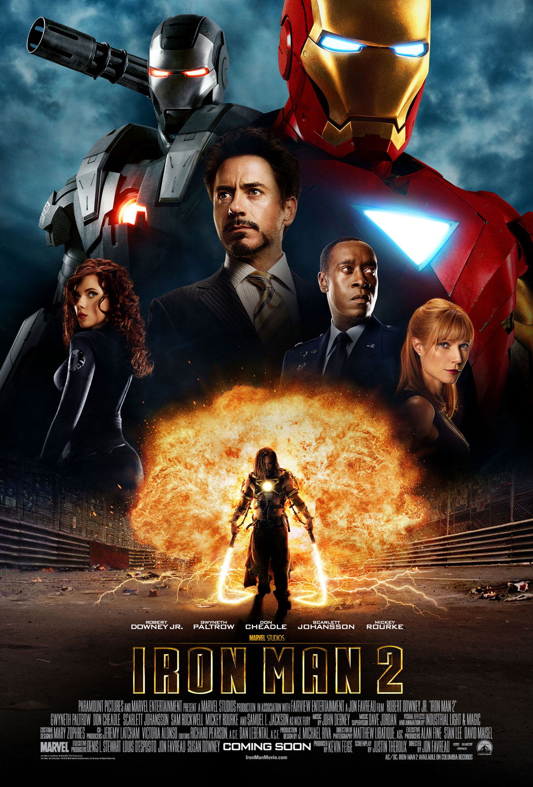
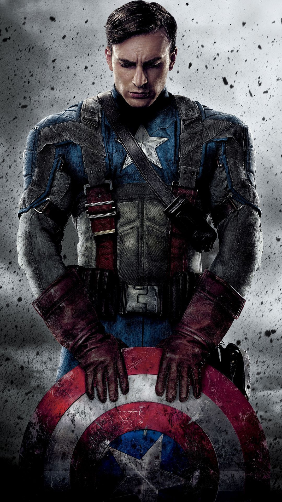
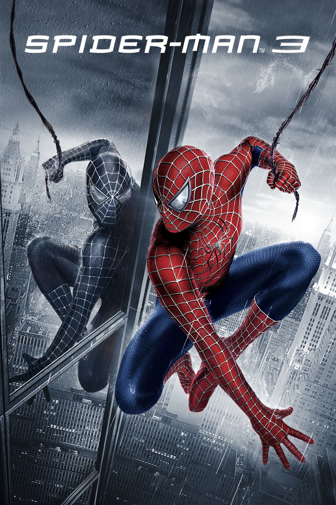

|  |
Iron Man 2Iron Man 2 is a 2010 American superhero film based on the Marvel Comics character Iron Man, produced by Marvel Studios and distributed by Paramount Pictures. It is the sequel to 2008's Iron Man, and is the third film in the Marvel Cinematic Universe (MCU). Directed by Jon Favreau and written by Justin Theroux, the film stars Robert Downey Jr. as Tony Stark / Iron Man, alongside Gwyneth Paltrow, Don Cheadle, Scarlett Johansson, Sam Rockwell, Mickey Rourke, and Samuel L. Jackson. Six months after the events of Iron Man, Tony Stark is resisting calls by the United States government to hand over the Iron Man technology while also combating his declining health from the arc reactor in his chest. Meanwhile, rogue Russian scientist Ivan Vanko has developed the same technology and built weapons of his own in order to pursue a vendetta against the Stark family, in the process joining forces with Stark's business rival, Justin Hammer. |
|  |
Captain America: The First AvengerCaptain America: The First Avenger is a 2011 American superhero film based on the Marvel Comics character Captain America, produced by Marvel Studios and distributed by Paramount Pictures. It is the fifth film in the Marvel Cinematic Universe (MCU). The film was directed by Joe Johnston, written by the writing team of Christopher Markus and Stephen McFeely, and stars Chris Evans as Steve Rogers / Captain America, alongside Tommy Lee Jones, Hugo Weaving, Hayley Atwell, Sebastian Stan, Dominic Cooper, Neal McDonough, Derek Luke, and Stanley Tucci. Set predominantly during World War II, Captain America: The First Avenger tells the story of Steve Rogers, a sickly man from Brooklyn who is transformed into super-soldier Captain America and must stop the Red Skull, who intends to use an artifact called the "Tesseract" as an energy-source for world domination. |
|  |
Spider-Man 3Spider-Man 3 is a 2007 American superhero film based on the fictional Marvel Comics character Spider-Man. It was directed by Sam Raimi from a screenplay by Raimi, his older brother Ivan, and Alvin Sargent. It is the third and final installment in Raimi's original Spider-Man film trilogy, following Spider-Man (2002) and Spider-Man 2 (2004). The film stars Tobey Maguire, Kirsten Dunst, James Franco, Thomas Haden Church, Topher Grace, Bryce Dallas Howard, Rosemary Harris, Cliff Robertson, J. K. Simmons, and James Cromwell. It is the highest grossing Spider-Man film ever made. Following the events of Spider-Man 2, Peter Parker has become a cultural phenomenon as Spider-Man, while Mary Jane Watson continues her Broadway career. Harry Osborn still seeks vengeance for his father's death, and an escaped Flint Marko falls into a particle accelerator and is transformed into a shape-shifting sand manipulator. An extraterrestrial symbiote crashes to Earth and bonds with Peter, influencing his behavior for the worse. |